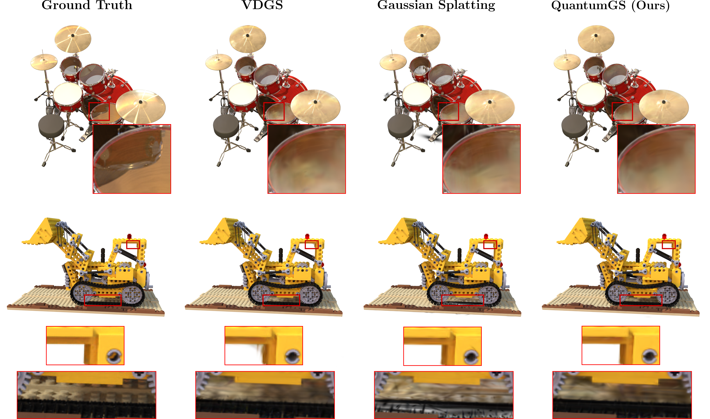

Qualitative Comparisons
Synthetic Scenes
Object-centric scenes. In the Drums scene, VDGS blurs the reflection on the drum surface, losing the geometric definition. QuantumGS preserves the distinct shape. In the LEGO scene, VDGS exhibits floater artifacts near the roof. QuantumGS recovers occlusion shadows on the chassis.
Real-World Scenes

Comparisons on real-world datasets. In the Truck scene (Tanks and Temples), standard 3DGS fails to capture high-frequency reflections on the windshield. QuantumGS recovers sharp specular details. In the Kitchen scene (Mip-NeRF 360), standard 3DGS renders the LEGO truck with unnatural foggy appearance. QuantumGS produces clear boundaries.